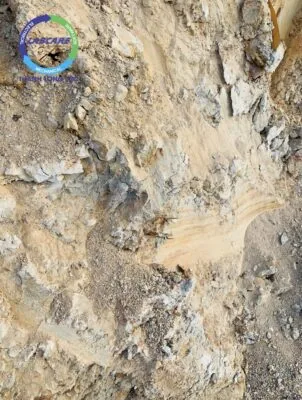
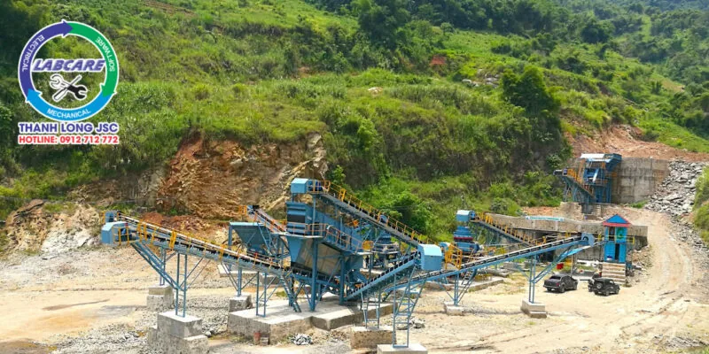
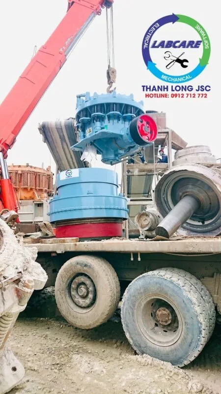
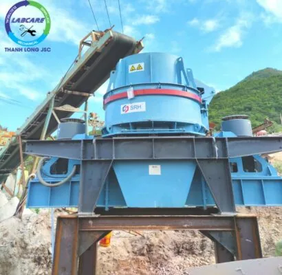
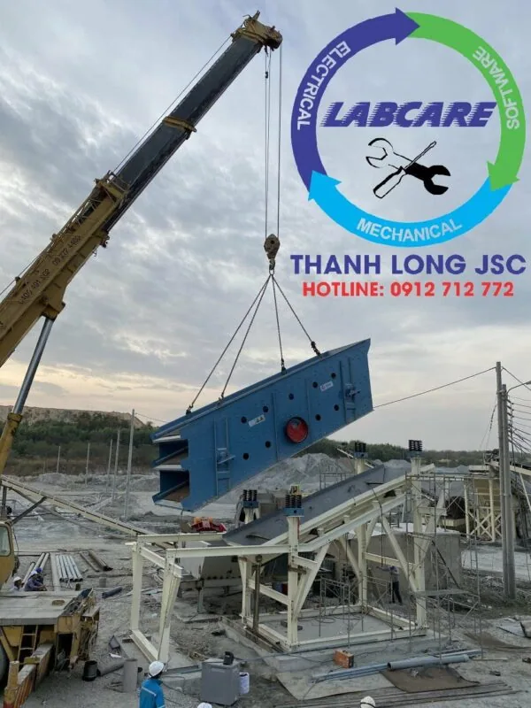
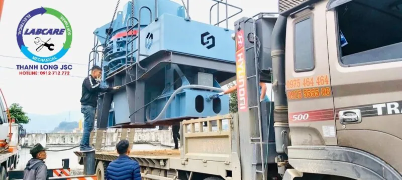

Cát nghiền nhân tạo là loại cát được nghiền từ đá cát kết, sỏi đồi, sông, đá mi sàng, đá granite, bazan, … Cát nhân tạo có cỡ hạt gần tương tự với cát tự nhiên. Cát nhân tạo được đảm bảo các yêu cầu về tính chất cơ lý, cơ hóa. Có thể trộn lẫn theo tỷ lệ phù hợp, với cát tự nhiên trong bê tông, xây dựng. Bản chất của đá cát kết là các hạt cát kết dính lại với nhau, bằng những liên kết yếu tạm thời. Nếu tách riêng bản thân từng hạt cát. Thì nó lại có độ cứng rất lớn, và có tính chất giống với cát tự nhiên. Vậy nên, việc chọn đá cát kết là nguyên liệu chính để sản xuất cát nghiền nhân tạo là một trong những lựa chọn tốt nhất hiện nay.
Nghiền đá cát kết là gì?
Đá cát kết là đá có thành phần gồm các hạt cát, chủ yếu là fenspat và thạch anh. Đá cát kết được gắn kết bởi xi măng silic, canxi, oxit sắt, … Cát kết nằm giữa đá vôi và đá bùn, với kích thước từ 0,1 mm tới 2 mm. Các loại đá có kích thước hạt nhỏ hơn gồm bột kết và sét kết. Các loại đá có kích thước hạt lớn hơn như:. Đá dăm kết và sỏi kết, được gọi chung là cuội kết. Cát kết thông thường tương đối mềm, và dễ gia công. Vậy nên được dùng cho vật liệu xây dựng, lát đường phổ biến.
Các loại đá cát kết
Cát kết được chia thành các loại sau theo thành phần khoáng vật và cấu trúc của chúng:
- Cát kết Acco, với hàm lượng fenspat lớn hơn >25%. So với cát kết thạch anh, độ mài tròn và độ chọn lọc kém. Các loại đá cát kết giàu fenspat, thường có nguồn gốc từ sự phong hóa cơ học hoặc hóa học của các đá granite và đá biến chất.
- Cát kết thạch anh, với hàm lượng thạch anh trên >90%. Có độ mài tròn và chọn lọc tốt. Cát chỉ toàn thạch anh, thường được hình thành trong môi trường xa nguồn. Do thạch anh là một khoáng vật ổn định nhất.
- Cát kết lithic được hình thành, từ các mảnh vụn của các đá hạt mịn như:. Đá phiến sét, đá núi lửa và đá biến chất hạt mịn.
- Đá xám greywacke là gồm các mảnh vụn đá, thạch anh và fenspat góc cạnh. Những hạt này thường được bao quanh bởi một cấu trúc hạt mịn, tương tự như đất sét được phong hóa từ đá phiến sét và một số đá núi lửa.
- Cát kết Aeolian là loại đá thường được hình thành từ trầm tích gió, ở rìa các sa mạc.
- Đá dholpur màu be, rajpura màu hồng. Marson màu đồng và màu gỗ tếch, là một số loại đá cát.

Nghiên cứu công nghệ sản xuất cát nghiền tại Tỉnh Điện Biên hiện nay
Theo đánh giá của Sở Xây dựng Điện Biên, nhu cầu sử dụng cát trong xây dựng trên địa bàn tỉnh ngày càng cao. Trong khi nguồn cát tự nhiên, cung cấp cho các hoạt động xây dựng đang dần khan hiếm. Vì thế, giá thành cát tự nhiên ngày một tăng cao. Ngoài ra, do vận chuyển xa nên giá thành cát xây dựng phục vụ các công trình ở các huyện vùng cao rất cao. Trước thực trạng trên, việc sử dụng cát nghiền nhân tạo trong xây dựng cần được lưu tâm, khuyến khích.

Việc lựa chọn công nghệ sản xuất cát nghiền nhân tạo, là một công đoạn “ mấu chốt “. Quyết định sự thành bại, trong cả khâu sản xuất của doanh nghiệp. Hiện nay có 2 công nghệ trong sản xuất cát nghiền, đó chính là công nghệ khô và ướt. Tuy nhiên, theo khảo sát và chia sẻ của đại đa số đơn vị . Thì có tới 93,5% lựa chọn công nghệ ướt. Lý do chính là thành phần và tính chất cơ lý hóa, thổ nhưỡng của nguyên vật liệu đầu vào nước ta. Mà công nghệ làm cát khô, không tối ưu hóa và hiệu quả được. Các thành phần đất, sét, bụi bẩn, tạp chất hữu cơ không được loại bỏ triệt để. Vậy quy trình nghiền đá cát kết ra cát nghiền nhân tạo, theo công nghệ ướt có những quy trình nào ?
Các đơn vị Tỉnh Điện Biên nói gì về cát nghiền nhân tạo ?
Theo Chủ Tịch Hội Đồng Quản Trị, của công ty sản xuất cát lớn nhất Tỉnh Điện Biên cho biết:. “ Hiện nay công ty đã có 4 dây chuyền sản xuất cát nghiền nhân tạo. Tuy nhiên, chỉ có 1 trạm do Thanh Long JSC lắp đặt mới đáp ứng tiêu chuẩn kỹ thuật. Các dây chuyền còn lại, chưa sản xuất được đa dạng sản phẩm. Chưa đáp ứng đủ tiêu chuẩn theo quy định. Chính vì vậy, cát nghiền nhân tạo từ dây chuyền do Thanh Long JSC lắp đặt. Chủ yếu được đưa vào sản xuất bê tông, gạch không nung, cấp phối bê tông… “

Cát nghiền nhân tạo có nhiều đặc điểm nổi trội hơn cát tự nhiên như :. Có thể điều chỉnh mô đun độ lớn, và tỷ lệ thành phần hạt theo từng yêu cầu cấp phối cho các loại bê tông khác nhau. Cát nghiền nhân tạo có tỷ lệ thành phần hạt ổn định, độ góc cạnh lớn hơn cát tự nhiên. Lượng hạt dẹt ít hơn đá mạt, còn kiểm soát được lượng tạp chất gây hại đối với bê tông như bùn, sét, … Bên cạnh đó, sử dụng cát nhân tạo giúp tiết kiệm chi phí, giảm giá thành và thân thiện, bảo vệ môi trường.
Quy trình thực tế trạm nghiền đá cát kết thành cát nhân tạo tại Tỉnh Điện Biên
Đá cát kết được khai thác và đổ vào máng cấp liệu. Qua máy cấp liệu rung dạng răng lược, để lọc đi các tạp chất và đất. Sau đó được tách ra ngoài theo băng chuyền. Đá cát kết được cấp liệu rung, đưa vào máy kẹp hàm. Kẹp hàm tiến hành nghiền kích thước nhỏ lại và qua máy nghiền côn. Tiếp giai đoạn nghiền côn đá được đổ lên sàng thành phẩm phân loại, lấy các kích thước đá theo yêu cầu. Đá có kích thước 0-40mm, đưa qua máy nghiền cát. Qua quá trình “đá va đá”, tạo thành sản phẩm cát thô. Sản phẩm tạo ra là những hạt cát 0-4mm, được cấp vào máy rửa cát để loại bỏ tạp chất đến khi cát nhân tạo đạt chuẩn.
+ Cấp liệu rung
+ Máy nghiền hàm

+ Máy nghiền côn

+ Máy nghiền cát / Máy vo đá

+ Sàng rung phân loại

Thanh Long Cung cấp máy nghiền đá cát kết ra cát nhân tạo
Máy nghiền cát do Thanh Long JSC, thường lắp đặt trong giai đoạn cuối của trạm nghiền đá cát kết, granite, sỏi, … Để tạo ra dải hạt từ 0-40mm (tùy theo kích thước lỗ sàng). Các loại đá 1×2 được vo tròn đồng đều, đáp ứng các TCVN. Đó là các tiêu chuẩn như:. TCVN 9205 : 2012, TCVN 7570: 2006 và tất cả các TCVN khác.
- Có bôi trơn dầu mỡ đáng tin cậy
- Truyền động đai V, Truyền động kép
- Duopactor được làm từ thép xây dựng chắc khỏe, kiên cố, được thiết kế để lắp đặt nhanh chóng và dễ dàng
- Trục thép hợp kim và giá bệ cân kiên bố trong một vỏ bọc hình vỏ đạn rắn chắc.
- Chi phí vốn có tính cạnh tranh đặc biệt khi so sánh với các thiết bị nghiền thông thường.
- Cài đặt dễ dàng nhanh chóng với các kết cấu đỡ tối thiểu.
- Dễ dàng truy cập vào các bộ phận bên thông qua một cửa kiểm tra rộng rãi trong buồng nghiền.
-
Chi phí hoạt động tối thiểu – Chi phí hao mòn tối thiểu, chi phí bảo trì thấp, tiêu thụ điện năng thấp hơn cho mỗi tấn sản phẩm.
- Thân thiện với môi trường – Yên tĩnh khi vận hành.
- Chịu tràn và những thay đổi trong việc phân loại vật liệu đầu vào – Hệ thống nhiều tầng ép có thể hoạt động như một hệ thống tràn tích hợp sẵn ngăn động cơ bị ngắt khi xảy ra tình trạng quá tải. Trong hầu hết các máy có tính cạnh tranh, Không có cơ sở Tầng.
- Khả năng kiểm soát sự phân bố kích thước sản phẩm – Bằng phương tiện kiểm soát tầng, thay đổi tốc độ cánh quạt và kích thước cánh quạt.
- Tạo hình dạng hạt lập phương vượt trội trong đó tăng cường hiệu quả sàng lọc.
- Ngoài ra còn có máy nghiền cát di động, phù hợp với các bãi tập kết đá cát kết rải rác khắp nơi. Di động tại nhiều điểm khác nhau, tiết kiệm chi phí đầu tư.

Hãy liên hệ với chúng tôi, tư vấn và báo giá miễn phí: 0912.712.772
Thanh Long JSC chuyên cung cấp :
- Trạm nghiền cát/đá: Máy kẹp hàm, máy nghiền côn, sàng rung phân loại, máy nghiền cát, trạm nghiền đá di động, …
- Công nghệ rửa/tách: Máy rửa cát theo module, sàng rung tách nước, máy tách cát mịn, máy thu hồi cát mịn,..
- Thiết bị phụ tùng, vật tư: Dao nghiền, lưới sàng, má kẹp, nón côn,...
Kênh video Youtube: Thế giới máy nghiền đá Thanh Long JSC
Website: https://thegioimaynghienda.com
#bn